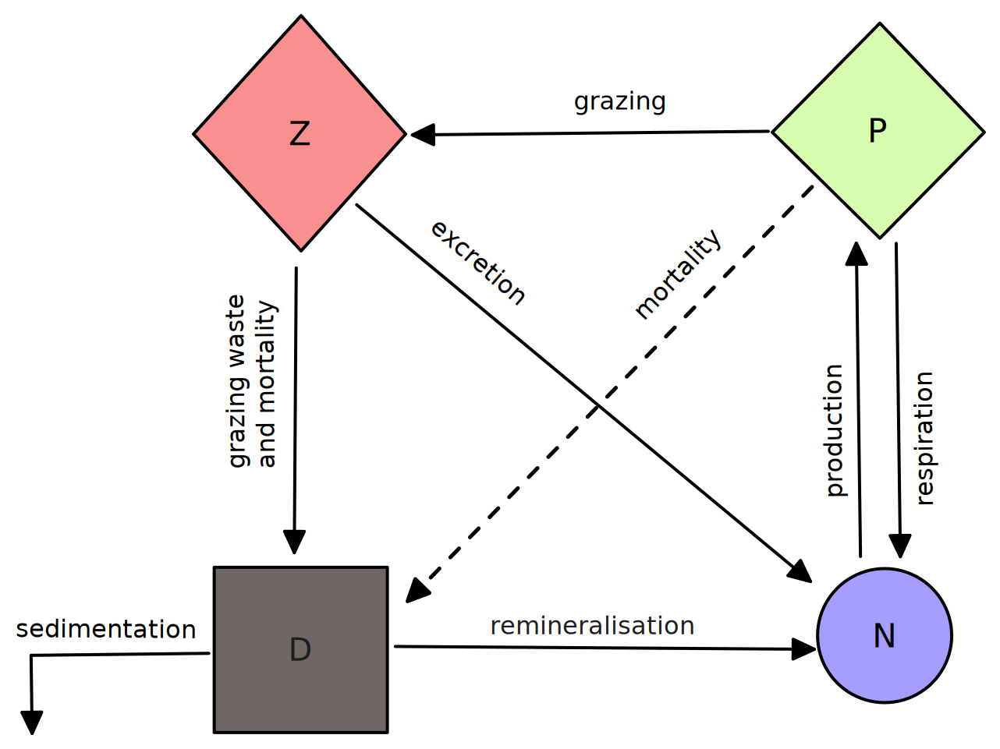

Nutrient Phytoplankton Zooplankton Detritus (NPZD) model
The provided NPZD model is the low complexity model of Kuhn et al. (2015).
Model equations
\[\frac{\partial P}{\partial t} = \mu_\text{max}\frac{N}{k_N + N}\frac{\alpha PAR}{\sqrt{\mu_\text{max}^2 + \alpha^2PAR^2}}P - g_\text{max}\frac{P^2}{k_P^2 + P^2}Z-(l_{PN}+l_{PD})P,\]
\[\frac{\partial Z}{\partial t} = \beta g_\text{max}\frac{P^2}{k_P^2 + P^2}Z - (l_{ZN} + l_{ZD}Z)Z,\]
\[\frac{\partial D}{\partial t} = (1 - \beta) g_\text{max}\frac{P^2}{k_P^2 + P^2}Z + l_{ZD}Z^2 + l_{PD}P - r_{DN}D,\]
\[\frac{\partial N}{\partial t} = - \mu_\text{max}\frac{N}{k_N + N}\frac{\alpha PAR}{\sqrt{\mu_\text{max}^2 + \alpha^2PAR^2}}P + l_{PN}P + l_{ZN}Z + r_{DN}D.\]
Here $\mu_\text{max} = \mu_0Q_{10}(T)$ and $l_{XY} = l_{XY0} Q_{10}(T)$ where $Q_{10}(T) = 1.88^{T/10}$.
Additionally, the phytoplankton and detritus sink at a constant rate.
Parameter variable names
| Symbol | Variable name | Units |
|---|---|---|
| $\alpha$ | initial_photosynthetic_slope | 1 / (W / m² / s) |
| $\mu_0$ | base_maximum_growth | 1 / s |
| $k_N$ | nutrient_half_saturation | mmol N / m³ |
| $l_{PN0}$ | base_respiration_rate | 1 / s |
| $l_{PD0}$ | phyto_base_mortality_rate | 1 / s |
| $g_\text{max}$ | maximum_grazing_rate | 1 / s |
| $k_P$ | grazing_half_saturation | mmol N / m³ |
| $\beta$ | assimulation_efficiency | - |
| $l_{ZN}$ | base_excretion_rate | 1 / s |
| $l_{ZD}$ | zoo_base_mortality_rate | 1 / s |
| $r_{DN}$ | remineralization_rate | 1 / s |
All default parameter values are given in Parameters.
Model conservation
Nitrogen is conserved in the evolution of this model (excluding external sources and sinking), i.e. $\frac{\partial P}{\partial t} + \frac{\partial Z}{\partial t} + \frac{\partial D}{\partial t} + \frac{\partial N}{\partial t} = 0$.